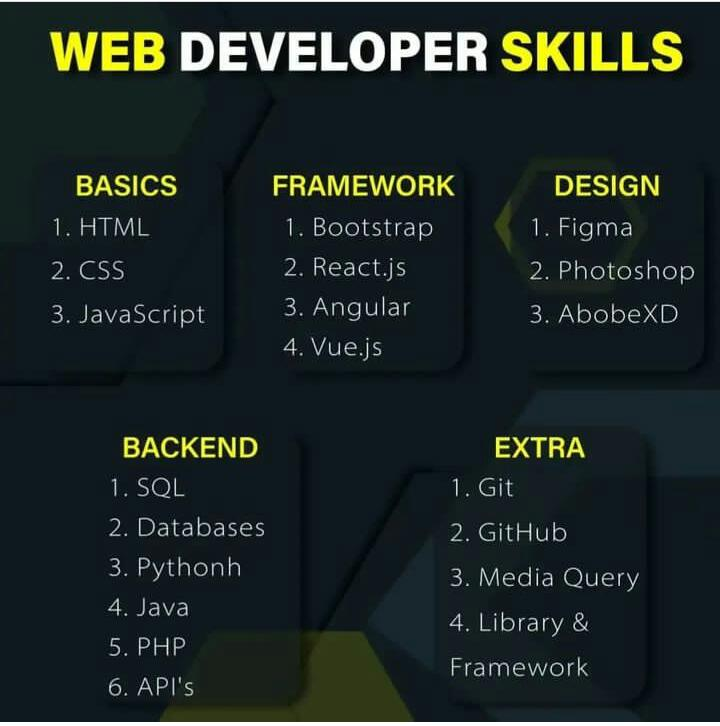

Learning Paths:
• Beginner, intermediate, and advanced learning paths.• Programming languages, frameworks, and tools.
Online Courses:
• Links to popular online platforms (Coursera, edX, Udacity, etc.).• Course recommendations for specific topics.
Tutorials and Guides:
• Step-by-step tutorials for common tasks.• Troubleshooting guides for common issues.
Documentation:
• Links to official documentation for popular technologies.• Tips on navigating and using documentation effectively.
Books and Reading Lists:
• Recommended books for different skill levels.• Reading lists for specific areas of computer science. 
Coding Challenges and Practice Sites:
• Links to platforms for coding practice (e.g., HackerRank, LeetCode).• Suggestions for specific challenges related to different topics.
Development Tools:
• A curated list of development tools and IDEs.• Tips and tricks for optimizing workflow.
Blogs and News Sources:
• Popular blogs and news websites covering computer science.• RSS feeds or newsletter subscriptions for staying updated.
Forums and Communities:
• Links to active forums and communities for discussions.• Tips on participating and networking.
Open Source Projects:
• Information on contributing to open source projects.• Links to beginner-friendly projects.
Career Resources:
• Resume tips and templates for computer science professionals.• Interview preparation resources.
Video Tutorials and Webinars:
• Curated playlists of video tutorials on YouTube or other platforms.• Upcoming webinars and conference schedules.
Coding Standards and Best Practices:
• Guidelines for writing clean and maintainable code.• Best practices for specific programming languages.

Security Resources:
• Resources on cybersecurity and best practices.• Tools and tips for secure coding.
Project Ideas:
• Lists of project ideas for different skill levels.• Suggestions for real-world projects to build.
Resource Updates:
• Regularly update the page with new and relevant resources.• Encourage user submissions and feedback.